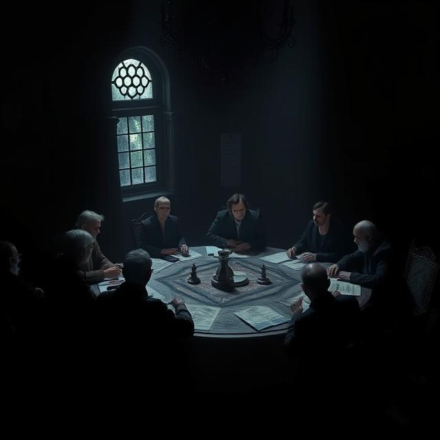

Джо и Зак се върнаха в централния площад на Рейвънфорд, с глави, пълни с нови открития, които трябваше да бъдат анализирани и разбрани. Събраните записи от Леон бяха ключът към разгадаването на проклятието, което беше обвързало града, но въпреки това, чувството на тежест не ги напускаше. Те знаеха, че битката не беше приключила, а само започнала. Докато минаваха покрай разрушените стени и останки от ритуалното място, закъснели граждани започнаха да се събират на площада. Те се събираха на групи, шепнеха помежду си, разменяха съвети и мисли, но изглеждаше, че всеки носеше в себе си тежестта на нещо невидимо. Все още беше рано да се каже дали те се радваха на новото начало или просто се опитваха да се справят с последствията от случилото се. "Зак," — каза Джо, като погледна към своите колеги в сянката на древните сгради. "Какво мислиш, че ще направим сега? Все още сме в опасност, нали?" "Не е време да се отпускаме," — отвърна Зак с твърд глас. "Ако Леон е успял да манипулира тези сили толкова дълго, тогава не можем да разчитаме, че сега всичко ще бъде спокойно. Трябва да разберем всичко за тези сили и как те са свързани с историята на града. Това е единственото ни средство да се защитим." Въпреки че градът беше преживял катастрофата, хората, които бяха свидетели на събитията, не бяха готови да се отпуснат. Те започнаха да разчистват разрушенията от ритуалното място, като преглеждаха внимателно всяка забележка и маркер, оставен от Леон и неговите последователи. Силата на проклятието все още беше част от града, вкоренена в земята и в самите хора. Джо се отправи към кметството, където се беше събрала основната група за координиране на усилията за възстановяване. Сред тях беше и Мира, собственичката на книгопродавницата, която се бе изправила, за да помогне с изследванията. Тя имаше добра идея какво трябва да се направи, а търсенето на древните книги и текстове вече беше започнало. "Джо," — каза тя, когато влезе в стаята, "нашето търсене ни води към нещо по-голямо. Леон не е бил само учен или магьосник. Той е бил съзнателно замесен в нещо, което е надхвърляло научната му амбиция. Някои от книгите, които намерихме, показват, че той е работил със сили, които може да разрушат самото съществуване на Рейвънфорд." Джо погледна струпаните ръкописи на масата и видя тежестта на истината в очите на Мира. Всичко, което изглеждаше като исторически текстове и обикновени ритуални записи, беше много повече. Тези магически стихотворения, символи и заклинания бяха носели в себе си древни знания, които никой не беше бил готов да разбере. Но явно Леон беше открил начин да ги използва. "И какво правим сега?" — попита Джо, неговото съзнание бързо прескачаше от едно на друго място, разкривайки изключителната тежест на това, което щеше да последва. "Сега трябва да разберем какво точно се е случило в тези ритуали," — отговори Мира, посочвайки един от старите текстове. "Трябва да разкрием какво беше целта на Леон и кои сили той беше събудил. Но има и още нещо — изглежда, че Леон не е работил сам. Възможно е да има други, които го следват." Тези думи бяха като леден душ. Ако Леон имаше последователи, това означаваше, че опасността не беше отминала. Беше много възможно те да бяха част от стара организация, скрита от векове, която все още беше свързана с магията на Рейвънфорд. "Трябва да открием кои са те," — каза Зак, когато се присъедини към разговора, все още носещ сребърния нож, който беше използвал в нощта на ритуала. "Или ще се изправим срещу тях и ще разкрием какво точно са замисляли." Цялото събрание беше изпълнено с тежък, но неотложен дух. Всеки от тях знаеше, че времето е наистина против тях. Те нямаха много време да открият какво стои зад това, което беше направено, и как да спрат онези, които бяха започнали. Възможността да спрат проклятието и да се борят с онези, които стояха зад него, беше единственото им спасение.
